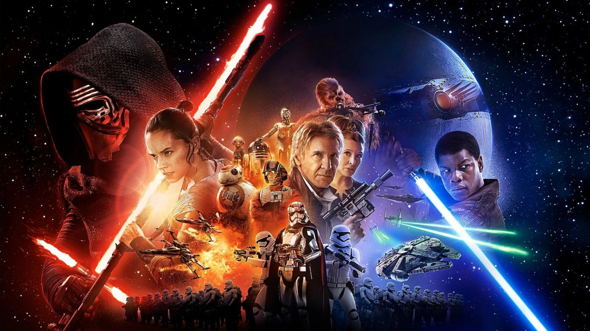

ÚLTIMAS NOTICIAS
¿Por qué Disney no va a seguir produciendo tantas películas de Star Wars?
Un directivo de la compañía aceptó que estaban saturando a la audiencia con tantos filmes en tan corto tiempo. La siguiente trilogía de películas estará a cargo de los creadores de la serie Game of Thrones.

En 2012, Disney decidió comprar Lucas Film por USD 4.000 millones de dólares con la idea de dar un giro a la saga de Star Wars. Pese al éxito que ha tenido la mayoría de películas (Episodio 7: El despertar de la fuerza, Episodio 8: El último Jedi, Rogue One y Solo) el gigante del entretenimiento estaría pensando en bajar el ritmo con el que produce los filmes inspirados en la historia de George Lucas.
La decisión la dio a conocer el presidente del grupo Bob Iger, que reconoció que fue un error lanzar un capítulo de la saga cada año. "Tomé una decisión sobre el cronograma (de estrenos) y ahora que veo atrás creo que cometí un error, y asumo la culpa. Fue un poco, demasiado rápido", dijo Iger en una entrevista con el Hollywood Reporter publicada el jueves. "Puede esperarse una desaceleración, pero no significa que dejaremos de hacer películas".
Disney programó estrenos de películas relacionadas con "Star Wars" cada año desde la salida de "El despertar de la fuerza" en 2015, lo que muchos miembros de la industria estimaron que podía terminar espantando a los fanáticos más furibundos.
Después de todo, ese episodio VII llegó 30 años después de "El retorno del Jedi".
La idea era estrenar spinoffs entre las películas del hilo original de "Star Wars".
La más reciente, "Solo: A Star Wars Story", fue un relativo fracaso comercial, con una taquilla de 400 millones de dólares en todo el mundo, lo que llevó a pensar en ese agotamiento de la historia.
En contraste con el episodio VIII "Los últimos Jedi", que fue lanzado seis meses antes, al final de 2017, con una taquilla global de 1.300 millones de dólares.
El episodio IX, que sería el último relacionado con la familia Skywalker, está previsto para diciembre de 2019.
Lucasfilm anunció en febrero que los creadores de "Game of Thrones" realizarán una nueva trilogía sobre la épica guerra espacial.
Los filmes de Danid Benioff y D.B. Weiss se distanciarán de la trama principal de la familia Skywalker y de la nueva trilogía que desarrollará Rian Johnson, el guionista y director de "Los últimos Jedi".
"Estamos en un punto en el que vamos a comenzar a tomar decisiones sobre lo que sigue" después del episodio IX, dijo Iger. "Pero creo que vamos a ser más cuidadosos con el volumen y los tiempos".
Para Robert Thompson, profesor de cultura pop en la Universidad de Syracuse, "La Guerra de las Galaxias" se ganó la adoración mundial "como un manjar poco común y poco frecuente", con 15 años entre las dos primeras trilogías, y otros 10 antes de que viéramos la tercera".
"Las películas de ‘Star Wars‘ eran como langostas, o lunas azules: impresionantes pero no muy seguidas. Todo eso ha cambiado, e Iger probablemente tenga razón en su evaluación", dijo Thompson a la AFP.
Pero añadió: "la franquicia puede que esté mostrando la edad, pero desaceleración o no, espero ver mucho más intentos para exprimirla porque vale la pena".